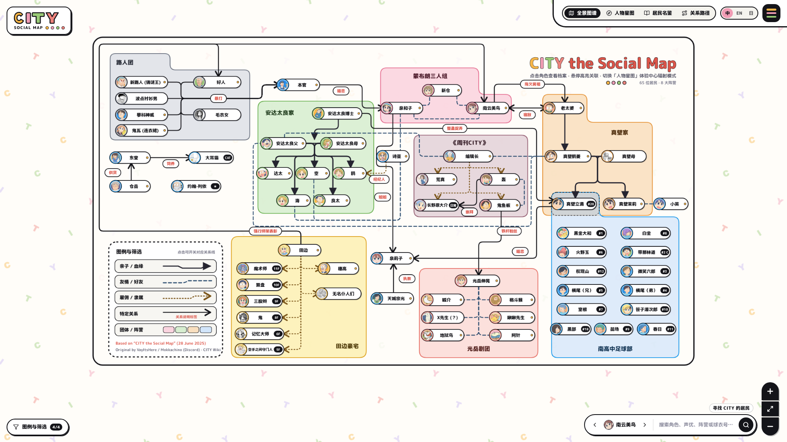
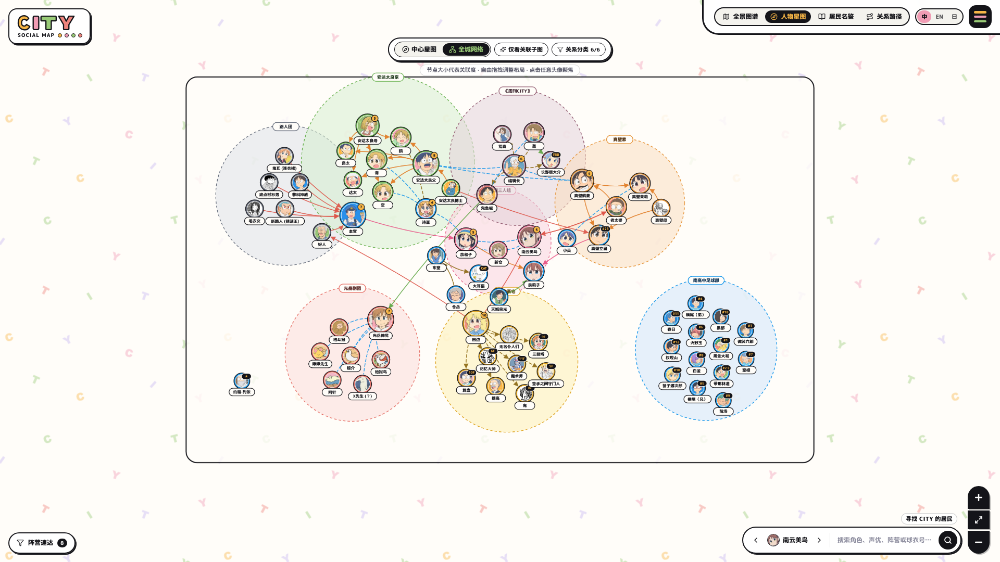

01 · 木目生庄房租战争
欠租宿敌！死斗开启！

拖欠房租 ⚡

02 · 蒙布朗大学 & 巡警
壁橱怪人 & 巡警暗恋！？

♡ 纯情暗恋


6 人暴打本官
0 连线：「死了。」
路人团暴走 & 神秘彩蛋
03 · 路人团 × 约翰·列侬


★ 《日常》联动
双阵营 #28
周刊编辑部 & 大耳猫
04 · 《周刊CITY》 & 全员星图
小城日常 · 互动人物关系图鉴
京都动画《小城日常 CITY》互动人物关系图谱
65 位小城怪人，怎么全都扯上了关系？！
65 位居民头像·58 位声优考据·全城可点可搜
SOCIAL MAP
中 / EN / 日
◎ 实时切换中心人物 · 不止看清每条联系
点一下角色 · 全城关系网立刻围绕 TA 展开
蒙布朗三人组
なぐも みどり
南云 美鸟
南雲 美鳥 · Midori Nagumo
📍 本作主角 / 蒙布朗大学 2 年级 / 木目生庄 201 室
🎙 声优 (CV)：小松未可子
★「心灵纯净」的爽快无赖少女
沉迷赛马、常年身无分文，因拖欠房租与房东老太婆上演史诗级对决，还被田边强行绑架去参加表彰宴！
◎ 以 TA 为中心展开星图
人物关系（按类别分组）5

↔ 新仓（にーくら）
嘴上吐槽南云，永远心软借钱给她。
→ 老太婆（真壁外婆）
围绕木目生庄房租的史诗追杀！
蒙布朗三人组 · 现已选中
いずみ わこ
泉 和子（泉わこ）
Wako Izumi
📍 蒙布朗大学 2 年级 / 木目生庄 204 室
🎙 声优 (CV)：石川由依
★「啊哈哈哈哈哈哈哈！」
热爱摄影与「有趣的事」，甚至住进新仓房间壁橱里的奇才少女；不知不觉把新任警官迷得神魂颠倒。
★ 当前中心星图：泉和子 (5 条羁绊)

→ 泉 莉子（妹妹）
南高中全校坐拥后援会的女神妹妹。
← 本官（派出所巡警）
一看到和子就紧张结巴！纯情单恋。

↔ 东屋 诗亚
高中挚友！「爆炸先生」画师本尊！
好人
路人团 (THE MOB)
群殴 →
本官
商店街派出所巡警
♡ 暗恋 →
泉和子
蒙布朗大学摄影奇才
姐姐 →
泉莉子
CITY 南高中女神
← ♡ 暗恋
真壁立涌 #28
真壁家 × 南高中足球部
双阵营交叠 · #28 青春Boy
真壁 立涌
🎙 入野自由 · 替补中场 #28
同时横跨「真壁家」与「CITY南高中足球部」，暗恋泉莉子的纯情少爷！


父子 · 租界外婆 · 宿敌整蛊一线贯通
★ 新井圭一《日常》粉丝泪目联动
长野原 大介
🎙 相泽舞 · 原名《日常》长野原美绪！
「唇泥棒工作室」人气漫画家，也是新人编辑轰的头号偶像！


《周刊CITY》编辑部 × 鬼鱼板师徒全收录
蒙布朗三人组
主角团的喧闹日常
真壁家（洋食マカベ）
大厨 · 房东与少爷
《周刊CITY》编辑部
赶稿地狱与跨作惊喜
田边豪宅（田边家）

强行表彰黑衣人军团
安达太良家
日本酒铺整蛊一家
光岳剧团
动物奇人与街头看板
CITY 南高中足球部
笨蛋青春踢球日常
路人团 THE MOB
存在感爆棚的无名街坊
65
全城 65 位居民高清裁脸头像
58
2025 动画全阵容声优完整标注
中 / EN / 日
三语译名考据一键切换 · 权威人名绝不错译
约翰·列侬（泥瓦匠） · 全城关系数：0
「死了。」
—— 就连全城唯一 0 连线的神秘路人，也认真为你收录！
🗺 模式 1 · 经典全景阵营地图

◎ 模式 2 · 65 人全城关系星图

拖拽 · 缩放 · 实时搜人桌面大屏 × 手机端全适配点击任意人物直达完整档案
SOCIAL MAP
《小城日常 CITY》全人物关系图鉴
social.city.chius.dev
65 位居民 · 65 条原著羁绊 · 中 / EN / 日 三语免费逛